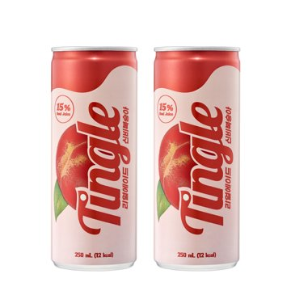
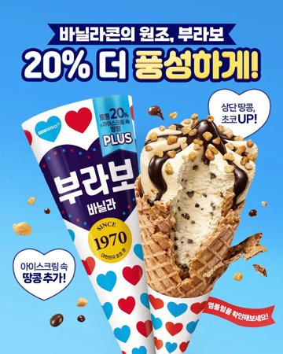
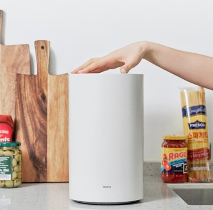
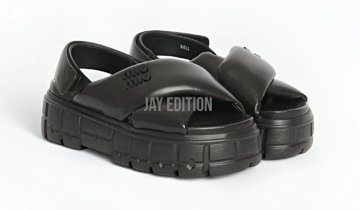
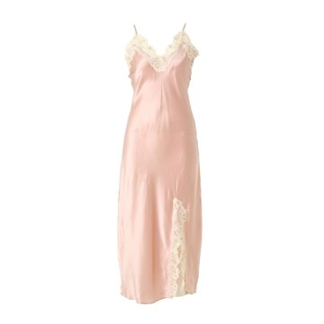
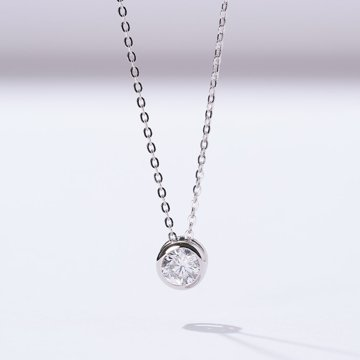

엔진 v3.16 기획 10건 (갈래별 하나씩)
기획 통과 0건 · 멈춤 10건 — 에이드, 부라보콘, 음식물처리기, 손선풍기, 립마스크, 롤렉스, 샌들, 와코루, 목걸이, 곰인형
점수는 엔진 검토자의 기준이라 참고만 — 판단은 기획서를 보고 해 주세요.

1. 팅글 신비복숭아 에이드
광고주 포인트: 설탕 대신 과즙을 15% 담아, 과일 그대로의 상큼한 맛을 그대로 전달합니다
엔진 결과: 멈춤 — 결과 없음
품질 점수(참고 · 엔진 검토자): 없음
큰 방향 후보 3개
- 링탭에서 터진 복숭아 회오리 (19점)
캔을 입에 대는 순간 링탭 구멍에서 분홍 과즙 탄산이 회오리로 솟고, 그 띠 안에 반으로 갈린 신비복숭아 조각·과육 결·기포가 돌며 그녀 얼굴·어깨 둘레를 감쌈(몸 둘레 크기 · 제품이 실제로 내놓는 과즙·탄산) - 각설탕 탑 vs 복숭아 과육 (20점) ← 고름
상표 없는 흰 복숭아 탄산 캔(실제 상품 아님)을 따면 입구에서 하얀 각설탕이 와르르 쏟아져 컵 위로 탑을 쌓음 → 하드컷 → 같은 자리에서 팅글을 따면 각설탕 대신 탱글한 복숭아 과육 조각과 과즙 방울이 탄산 기포와 함께 손 위로 튀어 오름 - 한 모금이 멈춘 부엌 (19점)
캔을 기울여 한 모금 들어가는 순간 시간이 멈추고, 캔 입구에서 입술까지 이어진 분홍 과즙 줄기가 공중에 굳어 그 안의 과육 결·기포 하나하나·복숭아 솜털 같은 질감이 보임 — 카메라만 그 줄기를 따라 미끄러짐(냉장고 불빛 아래, 사람은 정지)
기획서
장면 회사 탕비실에서 흰 캔을 기울이자 각설탕이 쏟아져 종이컵 위로 탑을 쌓고, 그가 냉장고에서 꺼낸 이 캔의 링탭을 따자 설탕 대신 복숭아 과육·과즙·기포가 손목 둘레로 솟았다가 그는 한 모금 마시고 두 캔을 나란히 둔다.
인물 30대 초반 회사원 남자 — 목에 건 사원증 줄 · 소매 걷은 흰 셔츠 · 사무실 탕비실(커피머신·종이컵·냉장고)이 첫 컷부터 보임
0~1초 훅 0-1초 · 탕비실 카운터 위 흰 캔 입구에서 각설탕이 줄지어 떨어져 종이컵 위로 손바닥 높이 탑이 이미 쌓여 있음
정점 8.5-12초 · 폭발 · 캔 입구에서 솟은 복숭아 과육 조각·과즙 방울·기포가 손목과 캔 둘레를 감싸 화면을 가장 크게 채움
끝 ② 이상한 장면 속에서 끝 · 카운터에 각설탕 더미 옆 흰 캔과, 복숭아 한 알 옆에 내려놓은 이 캔이 나란히 — 대비가 아직 살아 있고 이 캔이 화면 가운데 · 위 4분의 1은 빈 벽(끝카드 자리)
컷 수 7
감각 효과 과일·복숭아 맛 → 연분홍 과즙 방울 + 붉은 껍질 테가 남은 크림색 복숭아 과육 조각 + 탄산 기포가 입구에서 솟아 손목·캔 둘레를 돎(SENSE_FX 과일·베리 향 + 음료·탄산 줄) · 양념(정점 한 박자를 3.5초로 · 몸·캔 둘레 크기) · 8.5-12초 · 캔 입구에서 손목 둘레까지
실제 크기 컷 4.5-7초 · 상반신 · 그의 오른손 · 250 mL 슬림 캔(한 손에 감기는 크기 · 치수 출처: 추정 — 숫자 화면·말에 안 씀) · 냉장고에서 꺼내 가슴 높이로 들고 라벨 정면
정보 자막 12-13.5초 · 「무설탕 · 당류 2g · 과즙 15%」 · 「설탕 대신 과즙을 15%」(판매 사실 ① shots/04.png)
말 없음 · 그림으로 안 보이는 것(과즙 15%·당류 2g)은 정보 자막으로 · 자리 없음
끝 카피 설탕 대신 과즙 15%
기획서 원문 전체
고른 아이디어: 2. 각설탕 탑 vs 복숭아 과육 엔진: v3 바이럴 임팩트 지난 피드백: 같은 제품 지난 판 에이드_p13(편의점 앞 파라솔 · 링탭에서 복숭아 회오리가 편의점 앞 전체로 세 번 커짐)과 장소·이펙트가 겹치지 않게 회사 탕비실 · 손목·캔 둘레 크기 분출로 · 이 제품 피드백 원문은 없음 판정: "설탕 대신 과즙을 15% 담아, 과일 그대로의 상큼한 맛을 그대로 전달합니다" (광고주 포인트 원문 1번째 덩어리 — 쉼표는 나누지 않음 · 감각 낱말 「상큼·맛」이 있어 거르지 않음) · 등급 중가(단가 16,900원/24캔 묶음 · 경쟁 「쿠팡 유사」 → 비율 1배 · 1만 원 이상이라 생필품 아님) · 예: Q1(상큼·맛 → B), Q9(대신 → D) · v3idea 고른 안 2 의 스타일 D(Q9 「대신」)를 따르고 Q1 의 B 감각 효과(과즙·과육·기포 분출)를 정점에 얹음 · 다음 후보 B · 거름: 없음(중가는 D·B 둘 다 씀) · 안 되는 것 대조: 없음(D 가 맞서는 것은 힘·크기가 아니라 「설탕이 나오나 과즙이 나오나」 — 캔이 실제로 못 하는 것을 약속하지 않음) · 경쟁사 방식: 없음 스타일: D 대비·경쟁(터무니없는 대안) · 상표 없는 흰 캔을 따면 각설탕이 쏟아져 컵 위로 탑을 쌓고, 같은 자리에서 이 캔을 따면 설탕 대신 복숭아 과육·과즙·기포가 터져 오름 구매 목적: 감각 — brief_card `구매 이유:` 「작은 사치 · 자꾸 손이 가는 음료 · 설탕 없는 진짜 과일 맛」(m.ekn.kr 후기) 목적 볼거리: 링탭을 딴 순간 입구에서 복숭아 과육 조각·과즙 방울·탄산 기포가 슬로모션으로 솟아 손목과 캔을 감싸며 렌즈를 스침 — 「과일 그대로의 맛」을 눈으로 봄 뼈대: S3 현실로 끊었다 더 크게 · 이상한 대안(각설탕 탑) → 하드컷으로 현실(냉장고에서 꺼낸 실제 크기 캔) → 같은 「따는」 동작에서 더 큰 이상함(과육 분출) · D 에 맞는 뼈대 제품과 이상함: 제품에서 나옴 · 이 캔의 링탭 입구에서 과육·과즙·기포가 터져 나옴(흰 캔의 각설탕은 첫 대비만) 볼거리 주인: 제품 — 정점 화면을 채우는 과육·과즙·기포는 전부 이 캔의 입구에서 나와 캔과 그를 든 손목 둘레를 돈다 · 각설탕은 0~4.5초 대비로만 쓰고 정점·끝에선 화면 구석에 가만히 있음 감각 효과: 과일·복숭아 맛 → 연분홍 과즙 방울 + 붉은 껍질 테가 남은 크림색 복숭아 과육 조각 + 탄산 기포가 입구에서 솟아 손목·캔 둘레를 돎(SENSE_FX 과일·베리 향 + 음료·탄산 줄) · 양념(정점 한 박자를 3.5초로 · 몸·캔 둘레 크기) · 8.5-12초 · 캔 입구에서 손목 둘레까지 효과 근거: "설탕 대신 과즙을 15% 담아, 과일 그대로의 상큼한 맛을 그대로 전달합니다" → 따는 순간 나오는 것이 설탕이 아니라 복숭아 그 자체로 보임(과즙 15% · 무설탕이 만드는 「과일 그대로의 맛」을 맛 대신 그림으로) 효과 부딪힘: 없음 — 효과의 출구는 실제로 마시는 입구 하나(따는 순간 기포가 오르는 실제 작동을 부풀림) · 「과육이 들어 있다」는 주장은 자막·말로 하지 않음 · 몸이 시원해지는 효능 그림 없음 비교: 상표·색 없는 민무늬 흰 캔(실제 상품 아님)과 같은 탕비실 카운터·같은 「따서 기울이는」 상황 · 0-4.5초 각설탕 컷 ↔ 7-12초 이 캔 · 끝 13.5-15초 두 캔 나란히 · 근거 원문: 판매 사실 「무설탕·당류 2g·복숭아 과즙 15%」(shots/04.png) — 흰 캔의 설탕 양 수치는 쓰지 않음 편안함: 해당 없음 — 포인트·판매 페이지에 편안·피로 말 없음 입은 사람: 해당 없음 — 구매 목적 감각(매력 아님) 인물: 30대 초반 회사원 남자 — 목에 건 사원증 줄 · 소매 걷은 흰 셔츠 · 사무실 탕비실(커피머신·종이컵·냉장고)이 첫 컷부터 보임 메모 원칙: 1 실제 사용 — 회사원이 탕비실에서 캔을 따서 마심 · 2 못 찍는 한 방 = 포인트 감각(과육·과즙·기포)을 입구에서 크게 · 3 미니어처·거대한 손 없음 · 4 7컷·여러 각도·작동 부위(링탭 입구) 접사 컷 5 · 5 「설탕 대신」을 글이 아니라 따는 순간 나오는 것의 차이로 · 6 무설탕(없음 포인트) → 같은 자리 비교 컷 · 7 과즙 15%·당류 2g 은 정보 자막 · 9 라벨은 광고주 사진 그대로(제품 시트 Image 1) · 휘는 회전 컷 없음 몰입 기법: 컷 나누기 — 0-8.5초는 2초 안팎 짧은 컷 4개로 쌓고 정점 컷만 3.5초 · 카메라 — 5컷은 캔 입구 높이 접사, 6컷 정점은 카메라가 솟는 과육·기포 속으로 밀고 들어가 조각이 렌즈를 스침 · 조명 — 탕비실 낮 형광등 그대로, 정점엔 창빛이 캔과 과즙 방울에 모여 반짝임 후보: 고른 안 2 를 그대로 짬(v3.16 · 후보 짜기 다시 안 함) 버린 후보: 1. 링탭에서 터진 복숭아 회오리(지난 판 p13 과 장소·이펙트가 가깝고 다른 과일 음료로 바꿔도 섬) · 3. 한 모금이 멈춘 부엌(아름답지만 포인트 「설탕 대신」이 그림에 없음) AI 전용: 캔 입구에서 각설탕이 끝없이 쏟아져 컵 위로 탑을 쌓고, 지름 몇 mm 입구에서 손바닥만 한 과육 조각들이 솟아 공중에서 천천히 도는 것은 소품·편집으로 찍을 수 없음(입구보다 큰 물체가 끝없이 나옴 · 공중 정지 회전) 바꿔치기: 다른 복숭아 음료를 넣으면 「설탕 대신 과즙」 대비가 무너지고(설탕 든 음료면 각설탕 쪽이 맞음), 무설탕 제로 음료를 넣으면 과즙 15% 과육이 나올 근거가 없음 — 무설탕 + 과즙 두 사실을 다 가진 이 캔만 섬 불일치: 캔을 땄는데 음료 대신 각설탕이 쏟아져 탑이 됨 · 해소: 8.5초 · 같은 「따기」에서 이 캔은 설탕 대신 복숭아 과육·과즙이 나옴 → 「설탕 대신 과즙」 장면: 회사 탕비실에서 흰 캔을 기울이자 각설탕이 쏟아져 종이컵 위로 탑을 쌓고, 그가 냉장고에서 꺼낸 이 캔의 링탭을 따자 설탕 대신 복숭아 과육·과즙·기포가 손목 둘레로 솟았다가 그는 한 모금 마시고 두 캔을 나란히 둔다. 포인트 근거: "설탕 대신 과즙을 15% 담아, 과일 그대로의 상큼한 맛을 그대로 전달합니다" → 흰 캔은 각설탕(설탕) · 이 캔은 복숭아 과육·과즙(과일 그대로) 훅: 0-1초 · 탕비실 카운터 위 흰 캔 입구에서 각설탕이 줄지어 떨어져 종이컵 위로 손바닥 높이 탑이 이미 쌓여 있음 정점: 8.5-12초 · 폭발 · 캔 입구에서 솟은 복숭아 과육 조각·과즙 방울·기포가 손목과 캔 둘레를 감싸 화면을 가장 크게 채움 실제 크기 컷: 4.5-7초 · 상반신 · 그의 오른손 · 250 mL 슬림 캔(한 손에 감기는 크기 · 치수 출처: 추정 — 숫자 화면·말에 안 씀) · 냉장고에서 꺼내 가슴 높이로 들고 라벨 정면 대비: 각설탕이 쏟아져 쌓임 ↔ 그는 질린 듯 내려놓고 냉장고로 돌아섬 · 과육이 솟음 ↔ 그는 놀라 웃으며 한 모금 용도: 4.5-13.5초 · 회사원이 냉장고에서 꺼낸 캔을 따서(7-8.5초) 캔째 마심(12-13.5초) 크기: 실물 250 mL 슬림 캔(판매 페이지 「250 mL」 · 한 손에 들어감) — 일부러 바꾸지 않음 말: 없음 · 그림으로 안 보이는 것(과즙 15%·당류 2g)은 정보 자막으로 · 자리 없음 정보 자막: 12-13.5초 · 「무설탕 · 당류 2g · 과즙 15%」 · 「설탕 대신 과즙을 15%」(판매 사실 ① shots/04.png) 궁합: 높음 · 다리: 「설탕 대신 과즙」(포인트 원문) → 같은 따기에서 설탕이 나오냐 복숭아가 나오냐 제목줄: 없음 — 각설탕 탑 그림만으로 훅이 섬 끝 장면: ② 이상한 장면 속에서 끝 · 카운터에 각설탕 더미 옆 흰 캔과, 복숭아 한 알 옆에 내려놓은 이 캔이 나란히 — 대비가 아직 살아 있고 이 캔이 화면 가운데 · 위 4분의 1은 빈 벽(끝카드 자리) 끝 카피: 설탕 대신 과즙 15% 현실 그대로: 사람 2명 — 그와, 뒤쪽 커피머신 앞에서 커피를 내리는 동료 한 명(평일 낮 탕비실 · 동료는 각설탕 탑을 힐끗 봄 — 상황만) · 소리 각설탕이 종이컵·카운터에 부딪히는 달그락 · 냉장고 문 · 링탭 「칙」 · 탄산 쏴 · 멀리 사무실 키보드·낮은 한국어 말소리 · 빛 평일 낮 천장 형광등 + 창으로 드는 낮빛, 모두 켜짐 작동 대조: 「작동:」의 「링탭을 당기면 칙 소리와 기포가 입구로 조금 오름」을 부풀림 — 나오는 곳은 윗면 입구 한 곳 · 위로 솟아 바로 위·손목 둘레(가장 가까운 것)부터 감쌈 · 캔 옆·바닥에서는 아무것도 안 나옴 · 「안 되는 것」(시원해짐·과육 함유 주장)을 이기는 장면 아님 첫 장면 그림: 불필요 · 각설탕·과육은 글로 고정되고, 참조 그림은 변하기 전(빈 탕비실·닫힌 흰 캔)만 컷 수: 7 | 컷 | 초 | 크기 | 보이는 것 | 말 | |---|---|---|---|---| | 1 | 0-2 | 카운터 중간 접사 | 그의 왼손이 흰 캔을 종이컵 위로 기울임 · 입구에서 각설탕이 쏟아져 손바닥 높이 탑이 이미 쌓임 | 없음 | | 2 | 2-4.5 | 상반신 | 그가 흰 캔을 탑 옆에 내려놓고 오른손으로 옆 냉장고 문을 엶 · 뒤에 커피 내리는 동료 | 없음 | | 3 | 4.5-7 | 상반신 · 실제 크기 컷 | 오른손에 이 캔을 쥐고 가슴 높이 · 라벨 정면 · 열린 냉장고 앞 | 없음 | | 4 | 7-8.5 | 캔 입구 높이 접사(작동 부위) | 오른손 검지가 링탭을 당겨 올림 · 「칙」 · 입구에 기포 | 없음 | | 5 | 8.5-12 | 정점 접사 → 속으로 | 입구에서 과육·과즙·기포가 솟아 손목·캔 둘레를 돌고 렌즈를 스침 | 없음 | | 6 | 12-13.5 | 상반신 | 그가 캔을 기울여 한 모금 · 남은 조각 몇 개가 입구로 떨어져 들어감 | 정보 자막 | | 7 | 13.5-15 | 카운터 중간 | 각설탕 더미 옆 흰 캔 ↔ 복숭아 한 알 옆에 오른손이 이 캔을 내려놓고 손이 빠짐 · 위 1/4 빈 벽 | 끝카드 |

2. 빙그레 부라보콘
광고주 포인트: 과자 안쪽 초콜릿 코팅 기술로 마지막 한 입까지 유지되는 바삭한 식감
엔진 결과: 멈춤 — 결과 없음
품질 점수(참고 · 엔진 검토자): 없음
큰 방향 후보 3개
- 한 입에 터지는 바삭 파편 (22점) ← 고름
콘을 베어 무는 순간 와플콘 파편이 입 둘레에서 슬로모션으로 터져 얼굴 둘레에 떠 있고, 파편마다 안쪽 면의 초콜릿 코팅이 반짝이며 「바사삭」 소리가 공기 물결로 얼굴 둘레를 한 바퀴 돎 - 해가 지는 동안 한 개 (15점)
라이더는 보통 속도로 한 개를 먹는데 주변은 몇 시간이 몇 초로 압축됨 — 해가 하늘을 가로지르고 그림자가 바닥을 빙빙 돌고 지나가는 사람들은 흐린 띠, 그 사이 콘은 첫 입부터 꼬다리까지 같은 소리로 바삭 - 눅눅한 콘 옆의 부라보 (20점)
같은 순간 같은 더위에서 옆 사람의 이름 없는 흰 포장 콘은 눅눅해져 젖은 종이처럼 접혀 꺾이는데, 부라보콘은 깨무는 대로 바삭하게 갈라지며 파편이 손 둘레로 튐
기획서
장면 한여름 오후 야구장 외야석에서 응원 유니폼의 그녀가 반쯤 벗긴 콘을 깨무는 순간 와플 파편이 콘에서 분출해(회오리 대신 분출 — 바삭은 부러져 튀는 성질) 얼굴 둘레 공중에 고리로 떠 돌고, 파편마다 안쪽 초콜릿 층이 반짝이며, 녹아 흐르는 크림 옆에서도 와플은 마른 채 갈라지고, 마지막 한 입에 파편이 렌즈 앞까지 터진 뒤 응원 소리가 돌아온다.
인물 20대 여성 야구 관중 — 로고 없는 흰·남색 응원 유니폼 + 목에 건 응원 수건 + 외야석 좌석(화면에 보이는 표시)
0~1초 훅 0-1초 · 그녀 입 앞·콘 둘레 공중에 와플 파편 수십 개가 멈춰 얼굴 둘레를 둥근 고리로 둘러쌈 · 파편 안쪽 면이 초콜릿색(0초 평소 한 입 → 0.5초 안에 터진 그림이 화면 절반)
정점 9-12초 · 정점 모양 입자폭풍 · 마지막 한 입을 깨무는 순간 파편이 카메라 쪽으로 분출해 렌즈를 덮고 카메라가 파편 사이로 밀고 들어감 — 가장 큰 「바사삭」
끝 ③ 판매 형태 제품 단독 · 좌석 컵홀더에 포장째 꽂힌 새 콘 한 개(실제로 세울 자리) — 위 25% 하늘 빈 자리에 끝카드
컷 수 6
감각 효과 바삭·크런치 → 깨지는 순간 와플 파편이 사방으로 튀고 공중에 멈춰 얼굴 둘레를 고리로 돎 · 양념(0-2초 훅) + 정점(9-12초 렌즈 덮음) — 크기는 얼굴·콘 둘레 안(fix: 장면 전체로 번지지 않음)
실제 크기 컷 0-2초 · 그녀의 오른손과 얼굴(상반신 근접) · 160ml 콘(손바닥보다 조금 긴 원뿔 · 길이 치수 미확인) · 아래 절반은 하트 포장째 쥐고 위를 한 입 깨묾
정보 자막 2-4.5초 · 「과자 안쪽 초콜릿 코팅」 · 포인트의 기술 낱말(파편 단면 접사 위)
말 없음 · 그림과 실제 소리(바사삭·함성)로 섬 · 그림으로 안 보이는 「과자 안쪽 초콜릿 코팅」은 정보 자막으로
끝 카피 마지막 한 입까지 바사삭
기획서 원문 전체
고른 아이디어: 1. 한 입에 터지는 바삭 파편 엔진: v3 바이럴 임팩트 (v3.16 · 큰 방향은 v3_idea_pick.json pick 1 그대로 · fix 줄 반영) 지난 피드백: 피드백 원문 없음 · 지난 판 목록에 같은 제품 시험 p13(야구장 외야석·깨물 때마다 와플 조각 분출)이 있음 — 같은 광고주의 이전 시험 판은 겹침으로 보지 않는다(STYLES.md 0절 v3.13 「같은 제품을 다시 돌린 것」) · 고른 안 그대로 두되 p13 과 다른 점: 세 번 분출 → 한 번 터져 얼굴 둘레 고리로 도는 모양 · 녹는 크림 옆 마른 초콜릿 층 접사 · 마지막 한 입 정점 하나 판정: "과자 안쪽 초콜릿 코팅 기술로 마지막 한 입까지 유지되는 바삭한 식감" (광고주 포인트 원문 1번째 덩어리) · 등급 생필품(단가 약 1,400~2,500원 · 경쟁 월드콘 「동급」 → 비율 1배 · 1만 원 미만) · 예: Q1(바삭·식감), Q7(안쪽 층) · 거름: 없음 · 안 되는 것 대조: 없음(콘이 부서지는 것·바삭함은 실물이 하는 일 · 다른 제품을 이기는 그림 없음) · 경쟁사 방식: 없음 스타일: B 물성 폭발 · 깨무는 순간의 바삭함(와플 파편)이 콘에서 터져 나와 그녀 얼굴·콘 둘레를 휘감는 고리가 된다 — 회오리 대신 「분출 → 얼굴 둘레 고리」: 바삭은 부러지며 사방으로 튀는 성질이라 실제 결과에 맞음 구매 목적: 감각 — 브리프 `구매 이유:` 「더울 때 바삭한 콘 아이스크림 생각났다」(11번가 후기) · 맛·식감을 즐기려고 목적 볼거리: 마지막 한 입을 깨무는 순간 와플 파편이 렌즈 앞까지 터지고 파편마다 안쪽 초콜릿 층이 보임 — 「끝까지 바삭」을 즐기는 순간이 화면을 채움 뼈대: S2 실물에서 터짐 · 0초부터 실제 크기 사람이 실제 크기 콘을 깨물고 그 콘에서 파편이 터짐 — 포인트가 「먹는 순간」의 식감이라 쓰는 순간이 곧 훅 제품과 이상함: 제품에서 나옴 · 깨문 콘의 와플 파편이 콘에서 터져 공중에 멈추고 얼굴 둘레를 돎 인물: 20대 여성 야구 관중 — 로고 없는 흰·남색 응원 유니폼 + 목에 건 응원 수건 + 외야석 좌석(화면에 보이는 표시) 현실 그대로: 사람 외야석 관중 수십 명 — 응원 수건 흔들고 함성 · 파편이 멈춘 2~6초엔 관중도 같이 느려지지만 다치거나 넘어지지 않음 · 소리 관중 함성·응원 박수·멀리 배트 소리 · 빛 한여름 오후 쨍한 햇빛, 그녀 얼굴엔 모자 차양 없음 후보: - B · 훅 0-1초 얼굴 둘레 파편 고리 / 정점 9-12초 마지막 한 입 파편이 렌즈를 덮음 / 실제 크기 0-2초 / 바꿔치기 안쪽 초콜릿 층이 없는 콘이면 파편 단면이 그냥 과자 · 기발 4 연결 5 엔진 4 - B · 편의점 앞 파라솔에서 같은 파편 분출 · 훅 0-1초 손 둘레 파편 / 정점 9-12초 / 실제 크기 0-2초 / 바꿔치기 같음 · 기발 3 연결 4 엔진 4 - B · 한강 그늘에서 깨물 때마다 소리 물결 · 훅 약함(소리는 그림 한 장에 안 남음) / 실제 크기 0-2초 · 기발 3 연결 4 엔진 3 - D · 눅눅한 무명 콘 옆의 부라보(3안) · 훅 0-1초 꺾인 콘과 곧은 콘 / 정점 하드컷 뒤 꼬다리 파편 / 실제 크기 5-8초 · 기발 3 연결 5 엔진 3 버린 후보: 2. 해가 지는 동안 한 개 — 주인공이 하늘·시간 압축이라 제품이 밀림 · 3. 눅눅한 콘 옆의 부라보 — 꺾인 콘이 「맛없어 보이면 안 돼요」에 걸리고 훅이 잔잔함 AI 전용: 수십 개의 와플 파편이 얼굴 둘레 공중에 멈춘 채 고리로 돌고 파편 하나하나의 안쪽 초콜릿 층이 보이는 장면은 소품·와이어·고속 카메라로도 한 테이크에 못 찍는다(파편이 떨어지지 않고 떠서 돎) 바꿔치기: 안쪽 초콜릿 코팅이 없는 다른 콘을 넣으면 파편 안쪽 초콜릿 층이 없어 정점·접사가 서지 않고, 녹는 크림 옆에서 마른 채 남는 와플이 근거를 잃음 불일치: 콘 한 입에 과자 파편 수십 개가 터져 공중에 떠 돎 · 해소: 2초 · 떠 있는 파편 단면에 짙은 초콜릿 층이 보이고 자막 「과자 안쪽 초콜릿 코팅」 — 그래서 끝까지 바삭하다 장면: 한여름 오후 야구장 외야석에서 응원 유니폼의 그녀가 반쯤 벗긴 콘을 깨무는 순간 와플 파편이 콘에서 분출해(회오리 대신 분출 — 바삭은 부러져 튀는 성질) 얼굴 둘레 공중에 고리로 떠 돌고, 파편마다 안쪽 초콜릿 층이 반짝이며, 녹아 흐르는 크림 옆에서도 와플은 마른 채 갈라지고, 마지막 한 입에 파편이 렌즈 앞까지 터진 뒤 응원 소리가 돌아온다. 포인트 근거: "과자 안쪽 초콜릿 코팅 기술로 마지막 한 입까지 유지되는 바삭한 식감" → 파편 단면의 초콜릿 층 · 마지막 한 입이 가장 크게 바삭 물성: 바삭(와플 과자 파편 · 안쪽 초콜릿 층) 감각 효과: 바삭·크런치 → 깨지는 순간 와플 파편이 사방으로 튀고 공중에 멈춰 얼굴 둘레를 고리로 돎 · 양념(0-2초 훅) + 정점(9-12초 렌즈 덮음) — 크기는 얼굴·콘 둘레 안(fix: 장면 전체로 번지지 않음) 효과 근거: "과자 안쪽 초콜릿 코팅 기술로 마지막 한 입까지 유지되는 바삭한 식감" → 깨문 자리에서 와플이 젖지 않고 부러져 튀는 실제 결과 · 파편 안쪽 초콜릿 층 효과 부딪힘: 없음 — 포인트가 바삭함 하나라 맞설 다른 포인트(밀폐·위생·조용함) 없음 · 파편은 콘에서만 나와 다른 사람·물건을 덮지 않음 · 크림은 먹음직스럽게(「맛없어 보이면 안돼요」) 볼거리 주인: 제품 — 정점에서 화면을 채우는 것은 그 콘이 깨지며 내놓은 와플 파편과 그 안쪽 초콜릿 층 훅: 0-1초 · 그녀 입 앞·콘 둘레 공중에 와플 파편 수십 개가 멈춰 얼굴 둘레를 둥근 고리로 둘러쌈 · 파편 안쪽 면이 초콜릿색(0초 평소 한 입 → 0.5초 안에 터진 그림이 화면 절반) 정점: 9-12초 · 정점 모양 입자폭풍 · 마지막 한 입을 깨무는 순간 파편이 카메라 쪽으로 분출해 렌즈를 덮고 카메라가 파편 사이로 밀고 들어감 — 가장 큰 「바사삭」 실제 크기 컷: 0-2초 · 그녀의 오른손과 얼굴(상반신 근접) · 160ml 콘(손바닥보다 조금 긴 원뿔 · 길이 치수 미확인) · 아래 절반은 하트 포장째 쥐고 위를 한 입 깨묾 대비: 공중에 멈춘 파편과 느려진 관중 ↔ 그녀는 그대로 맛있게 씹음 · 정점 뒤 함성이 돌아옴 용도: 0-2초 · 야외에서 하트 포장째 쥔 바닐라 콘 아이스크림을 깨물어 먹는 장면(포장 라벨이 손 아래 보임) 크기: 실물 160ml(판매 페이지 용량) · 콘 길이 치수 미확인 · 성인 손에 쥐면 손바닥보다 조금 긴 원뿔(p1 손 없는 사진 비율 · 추정) — 장면 구간도 실물, 파편만 공중에 뜸 말: 없음 · 그림과 실제 소리(바사삭·함성)로 섬 · 그림으로 안 보이는 「과자 안쪽 초콜릿 코팅」은 정보 자막으로 정보 자막: 2-4.5초 · 「과자 안쪽 초콜릿 코팅」 · 포인트의 기술 낱말(파편 단면 접사 위) 궁합: 높음 · 다리: 브리프 「바삭한 와플콘 식감 유지」 → 깨물 때마다 파편이 터지는 장면 몰입 기법: 컷 나누기 — 0-6.5초 짧은 컷 3개(근접 → 파편 매크로 → 크림·단면 접사), 정점 직전 7-9초 짧은 2박자 · 카메라 — 0-2초 파편 고리를 따라 얼굴 둘레를 반 바퀴, 9-12초 파편 속으로 밀고 들어감 · 조명 — 한여름 역광이 파편 가장자리·초콜릿 층에 반짝임으로 모임 메모 원칙: 1 실제 크기 관중이 야구장에서 콘을 먹는 장면이 0초부터 · 2 못 찍는 한 방 = 바삭 파편(포인트 감각) · 3 미니어처·거대한 손 없음 · 4 6컷·여러 각도·작동 부위(깨문 단면·초콜릿 층) 접사 · 5 억지 연출 없이 맛있게 먹는 모습 · 7 「안쪽 초콜릿 코팅」은 자막 작동 대조: 브리프 제품 이해 줄 없음 → 판매 페이지 「내부 초코 코팅으로 더 바삭한 콘 과자」(p3) 기준 · 부풀린 것 = 깨물 때 와플이 부러져 부스러기가 튀는 일 · 힘이 나오는 곳 = 그녀 이가 닿은 콘 가장자리 · 파편은 그 자리에서 바깥(얼굴 둘레·카메라 쪽)으로만 · 옆 관중·좌석은 파편을 받지 않음 · 「안 되는 것」을 이기는 장면 아님(다른 콘과 겨루지 않음) 끝 장면: ③ 판매 형태 제품 단독 · 좌석 컵홀더에 포장째 꽂힌 새 콘 한 개(실제로 세울 자리) — 위 25% 하늘 빈 자리에 끝카드 끝 카피: 마지막 한 입까지 바사삭 첫 장면 그림: 불필요 · 파편 고리는 영상 문장으로(그림에 미리 그리면 굳은 모양이 됨 · 5-0) 컷 수: 6 | 컷 | 초 | 크기 | 보이는 것 | 말 | |---|---|---|---|---| | 1 | 0-2 | 상반신 근접(실제 크기) | 오른손에 하트 포장째 쥔 콘을 한 입 → 0.5초 안에 파편이 터져 얼굴 둘레 공중에 고리로 멈춤 | 없음 | | 2 | 2-4.5 | 매크로 | 떠 도는 파편 하나 — 와플 결 단면과 안쪽 짙은 초콜릿 층 · 뒤로 흐린 그녀 얼굴 | 자막 「과자 안쪽 초콜릿 코팅」 | | 3 | 4.5-7 | 접사(작동 부위) | 깨문 자리 — 바닐라 크림이 녹아 흐르는데 바로 옆 와플 벽은 마른 채 갈라짐 | 없음 | | 4 | 7-9 | 3/4 상반신 + 뒤 관중 | 파편 고리가 콘 둘레로 돌고 관중이 느리게 수건을 흔듦 · 그녀 계속 씹음 | 없음 | | 5 | 9-12 | 근접 → 파편 속 | 마지막 한 입(포장 끝에 남은 콘 끝) · 파편이 렌즈 쪽으로 터져 화면 덮음 | 없음 | | 6 | 12-15 | 제품 단독 | 좌석 컵홀더에 꽂힌 포장째 새 콘 · 함성 돌아옴 · 위 25% 하늘 | 없음 |

3. 미닉스 음식물처리기 더플렌더 mini
광고주 포인트: 뼈까지 갈아주는데 소음까지 적은 음식물처리기
엔진 결과: 멈춤 — 결과 없음
품질 점수(참고 · 엔진 검토자): 없음
큰 방향 후보 3개
- 치킨 뼈 산이 소리 없이 한 통으로 (21점) ← 고름
허리 높이로 쌓인 치킨 뼈·게 껍데기 더미가 지름 17cm 열린 뚜껑 안으로 회오리치며 빨려 들고, 은색 드럼 속 맷돌 날 사이에서 뼈가 슬로모션으로 가루가 됨 — 들리는 건 벽시계 초침뿐 - 귀마개를 벗는 밤 (15점)
같은 주방 같은 자세 두 박자 — 회색 다른 처리기 둘레 공기가 소음 물결로 일그러지는 그림(1초) → 하드컷, 미닉스 둘레 공기는 거울처럼 고요한데 그 안에서 족발 뼈 통째가 맷돌 날에 부서지는 것이 투명해진 본체 벽 너머로 보임, 두 번째 박자엔 감자탕 등뼈 한 냄비가 그대로 들어가 더 크게 - 맷돌 속으로 들어간 갈비뼈 (19점)
카메라가 열린 뚜껑으로 끊지 않고 들어가 3중 맷돌 날과 벽 사이 좁은 틈에서 갈비뼈가 층층이 쪼개지고 갈려 고운 가루로 떨어지는 세계(속 근거: 브리프 카드 「3중맷돌 분쇄·뼈까지 — 맷돌 날과 벽 간격 좁혀 닭뼈 등 단단한 음식물 분쇄, 부피 92.69% 감소」) — 맷돌 안인데 소리는 창밖 새소리뿐
기획서
기획 파일 없음
기획서 원문 전체
4. 오아 손 선풍기
광고주 포인트:
엔진 결과: 멈춤 — 결과 없음
품질 점수(참고 · 엔진 검토자): 없음
큰 방향 후보 3개
- 없음
기획서
기획 파일 없음
기획서 원문 전체
5. 라네즈 립 슬리핑마스크
광고주 포인트:
엔진 결과: 멈춤 — 결과 없음
품질 점수(참고 · 엔진 검토자): 없음
큰 방향 후보 3개
- 없음
기획서
기획 파일 없음
기획서 원문 전체
6. 롤렉스 서브마리너 40
광고주 포인트:
엔진 결과: 멈춤 — 결과 없음
품질 점수(참고 · 엔진 검토자): 없음
큰 방향 후보 3개
- 없음
기획서
기획 파일 없음
기획서 원문 전체

7. 미우미우 통굽 샌들
광고주 포인트: 이 샌들은 두툼한 플랫폼 솔이 발 전체를 안정적으로 받쳐주어 장시간 착용에도 피로감이 적습니다. 스트랩은 가죽, 새틴, 글리터 등 다양한 소재로 구성되며, 발등에는 MIU MIU 로고가 프린트되거나 메탈 디테일로 장식되어 브랜드의 아이덴티티를 강조합니다. 힐 높이에 비해 접지면이 넓어 안정적인 착화감을 제공합니다.
엔진 결과: 멈춤 — 결과 없음
품질 점수(참고 · 엔진 검토자): 없음
큰 방향 후보 3개
- 기울어진 골목, 그녀만 똑바로 (19점)
골목 전체가 35도로 기울어 있는데, 그녀는 통굽 솔 바닥이 돌바닥에 한 면 그대로 붙은 채 똑바로 서서 걸어 올라간다(중력 기울기 — 제품이 예외). 컷마다 솔 러그 접사·스트랩 로고·전신을 번갈아. - 해가 세 번 지나가도 같은 걸음 (18점)
카메라가 그녀의 발을 따라 끊지 않고 하루를 건너간다 — 머리 위 하늘은 해가 몇 초 만에 지고 그림자가 발 둘레를 시계처럼 돌지만, 그녀의 걸음 박자와 샌들은 아침과 똑같이 가볍다(시간 도약). - 디딜 때마다 바닥에 새겨지는 넓은 솔 (21점) ← 고름
그녀가 젖은 데크를 걸을 때마다 통굽 솔 바닥 모양 그대로 은빛 빛 자국이 발 아래 찍혀 솔 둘레로 번진다 — 옆 의자에 놓인 같은 높이의 얇은 스틸레토 굽(상표 없음)이 남긴 콩알만 한 빛 점과 나란히 보여, 같은 높이인데 디디는 면이 몇 배인지가 그림으로 비교된다. 가죽 스트랩의 miu miu 엠보싱 로고에 수면 반사 빛이 모임.
기획서
기획 파일 없음
기획서 원문 전체

8. 와코루 실크 레이스 슬립
광고주 포인트: 제품 소재: 원단 견100% 레이스 폴리에스터100%
엔진 결과: 멈춤 — 결과 없음
품질 점수(참고 · 엔진 검토자): 없음
큰 방향 후보 3개
- 멈춘 밤, 실크만 흐른다 (22점) ← 고름
그녀가 돌아서는 순간 방 안 시간이 멈춤 — 머리카락·커튼·스탠드 불빛의 먼지까지 공중에 굳었는데, 원피스 실크만 물처럼 계속 흘러 몸을 따라 출렁이고 슬릿의 크림 레이스는 꽃 모양 그대로 또렷이 서 있음 - 선물 상자에서 입혀지는 실크 (17점)
상자 뚜껑을 여는 순간 연핑크 실크가 액체처럼 솟아올라 그녀의 어깨부터 몸을 감아 내려가며 그대로 슬립 원피스가 되어 입혀짐 — 마지막에 크림 꽃자수 레이스가 V넥과 슬릿 자리에 꽃 피듯 펼쳐져 자리를 잡음 - 거울 앞, 물결이 번지는 실크 (21점)
그녀가 손끝으로 허리 옆을 쓸자 실크 표면에 물 위처럼 동그란 빛 물결이 번지고, 걸을 때마다 몸 둘레 원단 위로 빛의 물결이 어깨끈에서 밑단까지 흘러내림 — 크림 레이스 위에서는 물결이 멈춰 레이스 꽃무늬가 그대로 또렷함
기획서
기획 파일 없음
기획서 원문 전체

9. 도로시 랩다이아 목걸이
광고주 포인트: 소재 / 순도: 14K GOLD 58.5%
엔진 결과: 멈춤 — 결과 없음
품질 점수(참고 · 엔진 검토자): 없음
큰 방향 후보 3개
- 멈춘 현관, 펜던트만 빛난다 (17점)
시간이 멈춤 — 휘날리던 머리칼·코트 자락·창빛 속 먼지가 공중에 그대로 굳었는데 목 위 펜던트만 살아서 광채가 쇄골 둘레를 천천히 돈다 - 기념일 테이블, 빛이 쏟아진다 (16점)
그가 목에 걸어 준 순간 다이아가 촛불을 받아 흰빛·무지개 광점을 쏟아내 그녀 얼굴·쇄골·두 사람 사이 테이블 위를 별비처럼 덮음(몸·품 둘레 안) - 선물 알림에서 목까지, 한 줄로 (20점) ← 고름
폰 화면 속 선물 카드의 펜던트 사진에서 진짜 체인이 화면을 뚫고 흘러나와 그녀 목을 한 바퀴 감아 스스로 걸림 — 실물이 되는 순간 화면 속 사진보다 훨씬 밝게 빛남
기획서
기획 파일 없음
기획서 원문 전체
10. 누리베어 곰인형 90cm
광고주 포인트:
엔진 결과: 멈춤 — 결과 없음
품질 점수(참고 · 엔진 검토자): 없음
큰 방향 후보 3개
- 없음
기획서
기획 파일 없음